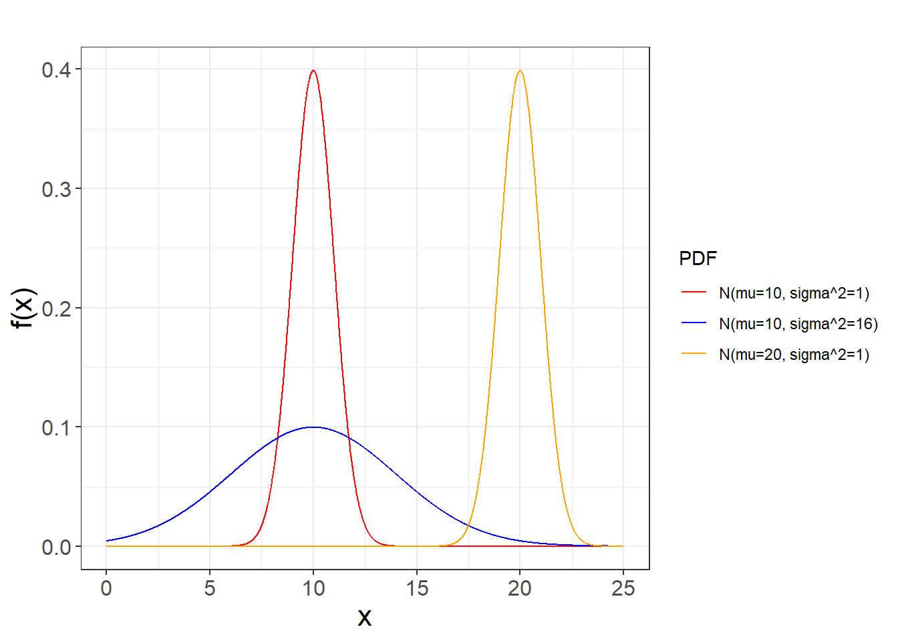
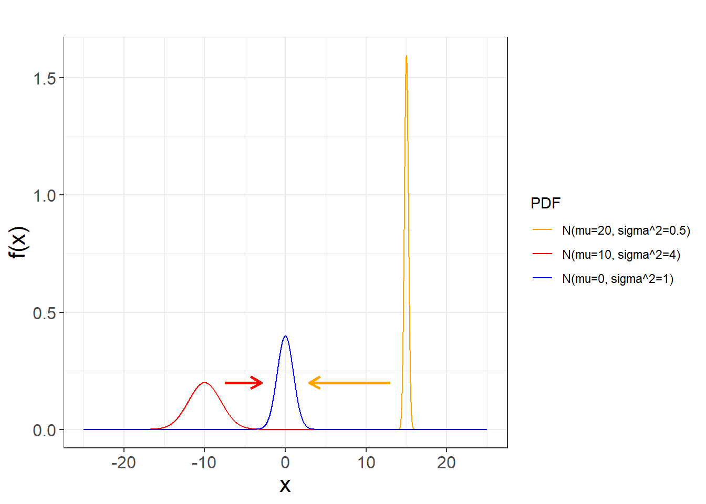

Chapter 9 Normal Distribution
In random experiments involving continuous outcomes, randomness can arise from changes in the units of measurement or from measurement error. In the first case, randomness can be understood as variability in the production of the unit. Under similar conditions, production may be influenced by uncontrolled factors. In the second case, the unit can be separated from the measuring process, and randomness can be understood as variations during the acquisition of the observed value.
Randomness can be described in a probabilistic model by a parameter, with the variance being the natural choice. Simple assumptions about how outcomes should deviate from the mean led Gauss to discover the normal distribution. While studying the trajectory of a celestial body, he realized that the randomness in measuring its position was due to instrumental error. The normal distribution was therefore first conceived as an error distribution. Later, when applied to anthropometric measurements, it was shown to effectively describe variations among individuals, paving the way for its applications in the life sciences.
The importance of the normal distribution stems from the fact that it is the continuous limit of the binomial distribution. Coupled with Bernoulli’s insight that relative frequency approaches the expected value in a Bernoulli trial, the normal distribution supports this behavior for any type of distribution. This principle forms the basis of the central limit theorem, which we will cover in the following chapters.
In this chapter, we will introduce the normal probability distribution as originally discovered by Gauss to represent errors in astronomical data and later applied by Galton to represent variations in human height.
9.1 History
In 1801 Gauss analyzed the data that obtained by Giuseppe Piazzi for the position of the Ceres, a large asteroid between Mars and Jupiter.
At the time Piazzi suspected it was a new planet, as it moved day to day against the fixed stars. In January, it could be seen at the horizon just before dawn. However, as days passed Ceres will rise latter and latter until it could not longer be seen because of the Sun rise. The Sun caught up with it.
Gauss understood that the measurements for the position of Ceres had errors.
He was therefore interested in finding how the observations were distributed so he could find the most likely orbit. With the orbit, we could derive the mass of the object and then decide whether it was massive as a planet or just a big asteroid.
Data was available only for the month of January. After which Ceres would disappear. He wanted to predict six moths latter, once it had slowly transited behind the Sun, where astronomers should point their telescopes just after at dusk.
Gauss had to account for the errors in the position of Ceres at a given day due to measurement

Gauss supposed that
small errors were more likely than large errors.
error were symmetrical. The error at a distance \(-\epsilon\) from the real position of Ceres was equally probable than the error at \(+\epsilon\).
the most likely position (the one that we believe the most) of Ceres at any given time in the sky was the average of multiple measurements.
That was enough to show that the deviations of the observations \(y\) from the orbit satisfied the equation (Stahl 2006)
\[\frac{df(y)}{dy}=-Cyf(y)\] with \(C\) a positive constant. The solution of this differential equation is:
\[f(y)=\frac{\sqrt{C}}{\sqrt{2\pi}}e^{-\frac{Cy^2}{2}}\]
9.2 Normal probability density
Normal, or Gaussian, probability density gives the distribution of measurement errors from the actual but unknown position of Ceres in the sky. Let us make a couple of changes to the function.
- We write the error density from the horizon using the random variable \(X\), that is, \(y=x-\mu\). \(\mu\) is the actual but unknown position of Ceres from the horizon. After a change of variable we find the probability density function:
\[f(x)=\frac{\sqrt{C}}{\sqrt{2\pi}}e^{-C(x-\mu)^2}\]
- We rename the variable \(C\) to \(\frac{1}{\sigma^2}\)
We then arrive at the following definition.
Definition:
A random variable \(X\) defined on the real numbers has a normal probability density function if it takes the form
\[f(x; \mu, \sigma^2)=\frac{1}{\sqrt{2\pi}\sigma}e^{-\frac{(x-\mu)^2}{2\sigma^2}}, x \in {\mathbb R}.\]
A normally distributed variable \(X\) has mean
\[E(X) = \mu\]
which for Gauss represented the real position of Ceres from the horizon; and variance
\[V(X) = \sigma^2\] which represented the dispersion of the error in the observations from the mean, and depended on the quality of the telescope and the skill of Piazzi.
\(\mu\) and \(\sigma\) are the natural parameters of the model, which fully describe the normal density function. Their interpretation depends on the nature and design of the random experiment.
It is important to underline from the outset that the parameters are not observable: they are abstract properties of the experiment. This is true not only for the normal model but for any statistical model. For instance, the true position of Ceres (\(\mu\)) was unknown; instead, Gauss obtained repeated measurements of Ceres’s position \((x_1, x_2, \dots, x_n)\). How could he infer likely values of an abstract quantity such as \(\mu\) from empirical data \((x_1, x_2, \dots, x_n)\)? This is the central question we will address in the following chapters.
Let us pause to appreciate the depth of the problem. For empiricists, all knowledge comes from experience, and thus \(\mu\) is regarded as an abstraction derived from data. For idealists, knowledge arises from intellectual insight or reasoning, so \(\mu\) represents a fundamental aspect of reality, while the observations are imperfect reflections of it. The experimental scientist finds reassurance in the fact that the sample mean \(\bar{x}\), an empirical quantity, converges to \(\mu\), the underlying abstraction, as \(n\) increases.
For the moment, we are going to assume that we know the parameters \(\mu\) and \(\sigma\), so we can use the normal model to make predictions.
When \(X\) follows normal probability density function, we say that \(X\) is normally distributed with mean \(\mu\) and variance \(\sigma^2\) and write
\[X \sim N(\mu, \sigma^2) \]
Let us look at some probability densities in the normal parametric model

For Gauss, the change from the red to the yellow curve means that Ceres moved, and the change from the red to the blue curve means that the telescope was less accurate.
9.3 Probability distribution
The probability distribution of the normal density:
\[F(a)=P(Z \leq a)\]
is the error function defined by the area under the curve from \(-\infty\) to \(a\)
\[F(a)=\int_{-\infty}^{a}\frac{1}{\sqrt{2\pi}\sigma}e^{-\frac{(x-\mu)^2}{2\sigma^2}} dx\] The function is found in most computer programs, and it does not have a closed form in terms of known functions.
Example (Female height)
Adolphe Quetelet applied the normal distribution to anthropometric data, proposing that the average of body measurements represented the “l’homme moyen” (the average man), which he saw as an idealized standard. Francis Galton, influenced by Quetelet, developed the concept of human variability as a defining property of populations. However, he also believed that selective breeding and eugenics could be used to shape populations toward an ideal. While both views are now considered ethically and scientifically incorrect and outdated, the introduction of normal distributions of traits was fundamental to the development of quantitative genetics.
In Galton’s famous study on human height (Galton 1886), he estimated that the mean of female height was \(163cm\) (\(64inch\)) with standard deviation of \(5.8cm\) (\(2.30inch\)).
What is the probability that a woman in Galton’s population is at most \(150cm\)?
\[P(X\le 150)=F(150, \mu=165, \sigma=8)=0.012\]
which can be computed with the code
Python: norm.cdf(150, 163, 5.8)
R: pnorm(150, 163, 5.8)Therefore, the type of woman that Galton measured, presumably 19th century middle-class English, had only \(1.2\%\) chance to be smaller than \(150cm\).
What is the probability that a woman’s height in the Galton’s population is between \(165cm\) and \(170cm\)?
\[P(165 \le X \le 170)=F(170, \mu=165, \sigma=8)-F(165, \mu=165, \sigma=8)=0.2513\]
Python: norm.cdf(170, 163, 5.8)-norm.cdf(165, 163, 5.8)
R: pnorm(170, 163, 5.8)-pnorm(165, 163, 5.8)Let us look at the probability distribution function

The red bar in the left is the probability in example above.
What is the first quartile for female height?
The first quartile is defined as:
\[F(x_{0.25}, \mu=163, \sigma=5.8)=0.25\]
or
\[x_{0.25}=F^{-1}(0.25, \mu=163, \sigma=5.8)=159.088\]
Python: norm.ppf(0.25, 163, 5.8)
R: qnorm(0.25, 163, 5.8)Let us make the following prediction: If we could measure many women in Galton’s population, then about \(25\%\) of them would be at most \(160cm\) tall. Note that, while we cannot perform this experiment, as Galton’s population is no longer available, the probabilities, as outcome propensities, reasonably describe the intrinsic properties of that experiment.
Example (Temperature)
The statistical theory of gases provides another key example where the variance is interpreted as an intrinsic property of the system, rather than as measurement error.
Maxwell proposed that the velocity \(V\) of a particle in an ideal gas at equilibrium follows a normal distribution:
\[ f(v; \mu, \sigma^2) = \frac{1}{\sqrt{2\pi} \, \sigma} \, e^{- \frac{(v - \mu)^2}{2\sigma^2}} \]
Assuming the gas is at rest, the mean velocity is \(\mu = 0\). For simplicity, we consider only one spatial dimension.
Earlier, Rudolf Clausius had related temperature to the average kinetic energy of gas particles, using the ideal gas law. He showed that:
\[ \frac{1}{2} k_B T = E\left(\frac{1}{2} m V^2\right) \]
where \(k_B\) is Boltzmann’s constant, and \(m\) is the mass of a particle. Given Maxwell’s statistical description of molecular velocities, the kinetic energy becomes:
\[ E\left(\frac{1}{2} m V^2\right) = \frac{1}{2} m \, E(V^2) = \frac{1}{2} m \, \text{Var}(V) = \frac{1}{2} m \, \sigma^2 \]
Solving for \(T\), we obtain:
\[ T = \frac{m}{k_B} \sigma^2 \]
Thus, temperature is directly proportional to the variance of particle velocities. This gives a powerful statistical interpretation of thermodynamic temperature: a measure of the spread in molecular motion.
Although Maxwell could not directly measure particle speeds, his probabilistic velocity model made accurate predictions about macroscopic properties of gases. For instance, it predicted that the viscosity of a dilute gas should be independent of pressure, a result he later confirmed experimentally.
9.4 Quantiles of the normal distribution
The outcomes of a normal random variable are often described in three ranges:
Since the mean \(\mu\) is also the median, it divides the measurements into two equal halves.
Values of \(x\) that lie more than \(2\sigma\) from the mean are considered rare (occurring in less than \(5\%\) of cases).
Values of \(x\) that lie more than \(3\sigma\) from the mean are considered extremely rare (occurring in less than \(0.2\%\) of cases).

Example (Female height)
We can describe the limits of the common heights for the distribution of female height in Galton’s population.
- at a distance of one standard deviation from the mean, between \((157.2, 168.8)\), we find \(68\%\) of the population
\[P(163-5.8 \leq X \leq 163-5.8)=P(157.2 \leq X \leq 168.8)=F(168.8)-F(157.2)=0.68\]
- at a distance of two standard deviations from the mean, between \((151.4, 174.6)\), we find \(95\%\) of the population
\[P(163-2 \times 5.8 \leq X \leq 163+2\times 5.8)=F(174.6)-F(151.4)=0.95\]
- at a distance of three standard deviations from the mean, between \((145.6, 180.4)\), we find \(99.7\%\) of the population
\[P(163-3 \times 5.8 \leq X \leq 163+3\times 5.8)=F( 180.4)-F(145.6)=99.7\]
It is customary to say that the distribution of the random variable \(X\) is the population distribution. However, it is important to emphasize that this population is not a concrete reality but an abstract property of the random experiment. It is the map, not the territory.
When we speak of a population, we really mean the hypothetical repetition of the random experiment an infinite number of times, with the idea that we could eventually exhaust all possible measurement units. For example, if Galton could measure the entire population of women at a given time, the histogram of those heights would be very close to the distribution of \(X\). While the distribution could thus be approximated by the population histogram, it would never be identical to it—if only because exhausting all observational units is impossible.
Note, however, that it is still reasonable to talk about the probability that a hypothetical woman living in Galton’s time would have a given height, even though she may never have existed and the population in question no longer exists. Probabilities can therefore be understood as statements about future or hypothetical outcomes of the experiment.
9.5 Standard normal density
The standard normal density is one member of the normal family, such that
\[f(x; \mu=0, \sigma^2=1)=\frac{1}{\sqrt{2\pi}}e^{-\frac{x^2}{2}}, x \in {\mathbb R}\]
The mean and variance are
\[E (X)= \mu = 0\]
and
\[V (X)= \sigma^2 =1\]
When a random variable follows a standard normal probability density, we say that the variable is standard normal and write
\[X \sim N(0,1)\]
9.6 Standard distribution
The probability distribution of a standard normal variable is
\[\Phi(x)=F(x)=P(X \leq a)\]
Because the standard distribution is special and will appear often, we use the letter \(\Phi\) for it. This is the error function defined by
\[\Phi(x)=\int_{-\infty}^{x} \frac{1}{\sqrt{2\pi}}e^{-\frac{z^2}{2}} dz\]
You can find it in most computer programs.
Python: norm.cdf(x)
R: prnorm(x)We usually define the limits of the most common outcomes for the normal standard variable

- The interquartile range \[P(-0.67 \leq X \leq 0.67)=0.50\]
Python: [norm.ppf(0.25), norm.ppf(0.75)]
R: c(qnorm(0.25),qnorm(0.75))- \(95\%\) range \[P(-1.96 \leq X \leq 1.96)=0.95\]
Python: [norm.ppf(0.025), norm.ppf(0.975)]
R: c(qnorm(0.025),qnorm(0.975))- \(99\%\) range \[P(-2.58 \leq X \leq 2.58)=0.99\]
Python: [norm.ppf(0.005), norm.ppf(0.995)]
R: c(qnorm(0.005),qnorm(0.995))9.7 Standardization
All normal variables can be standardized. This means that if \(X \sim N(\mu, \sigma^2)\), then we can transform the variable to a standardized variable
\[Z=\frac{X-\mu}{\sigma}\]
which will have density:
\[f(z)=\frac{1}{ \sqrt{2\pi}}e^{-\frac{z^2}{2}}\] Therefore, for any \(X \sim N(\mu, \sigma^2)\)
\[Z=\frac{X-\mu}{\sigma} \sim N(0, 1) \]

We can demonstrate this by replacing \(x=\sigma z+\mu\) and \(dx=\sigma dz\) in the probability equation
\(P(x\leq X \leq x +dx)=P(z\leq Z \leq z +dz)\) \[=\frac{1}{\sqrt{2\pi}\sigma}e^{-\frac{(x-\mu)^2}{2\sigma^2}}dx\] \[=\frac{1}{ \sqrt{2\pi}}e^{-\frac{z^2}{2}} dz\]
One of the advantages of standardization if that we can compute the probability of any normal variable \(X\sim N(\mu, \sigma^2)\) using the standard distribution
\(F(a)=P(X<a)=P(\frac{X-\mu}{\sigma}<\frac{a-\mu}{\sigma})\) \[=P(Z < \frac{a-\mu}{\sigma})= \Phi \big(\frac{a-\mu}{\sigma}\big)\]
For computing \(P(a\leq X \leq b)\), we use the property of the probability distributions
\(F(b)-F(a)=P(X\leq b)-P(X\leq a)\)
\[=\Phi \big(\frac{b-\mu}{\sigma}\big)-\Phi \big(\frac{a-\mu}{\sigma}\big)\]
Therefore \(\Phi(x)\) is the only function we need to compute probabilities for any normal random variable. Before computers, this property let statisticians rely on a single set of tables, and it still shows how all the randomness of a normal experiment can be captured by a probability function that is free of model‑specific parameters.
9.8 Questions
1) It is not true that for a normally distributed variable
\(\qquad\)a: its mean and median are the same; \(\qquad\)b: the standard probability distribution can be used to compute its probabilities; \(\qquad\)c: its interquartile range is twice its standard deviation; \(\qquad\)d: \(5\%\) of its observations are a distance greater than twice its standard deviation
2) For a normal standard variable
\(\qquad\)a: \(50\%\) of its observations are between \((-0.67,0.67)\); \(\qquad\)b: \(2\%\) of its observations are lower than \(-2.58\); \(\qquad\)c: \(5\%\) of its observations are greater than \(1.96\); \(\qquad\)d: \(25\%\) of its observations are between \((-1.96,-0.67)\)
3) if we know that \(\Phi(-0.8416212)=0.2\) then what is \(\Phi(0.8416212)\)
\(\qquad\)a: \(0.1\); \(\qquad\)b: \(0.2\); \(\qquad\)c: \(0.8\); \(\qquad\)d: \(0.9\)
4) the third quartile of a normal variable with mean \(10\) and standard deviation \(2\) is
\(\qquad\)a: norm.ppf(1/3, 10, 2)=9.138545;
\(\qquad\)b: norm.ppf(1-0.75, 10, 2)=8.65102 ;
\(\qquad\)c: norm.ppf(1-1/3, 10, 2)=10.86145 ;
\(\qquad\)d: norm.ppf(0.75, 10, 2)= 11.34898
5) probability that a normal variable with mean \(10\) and standard deviation \(2\) is in \((-\infty,10)\) is
\(\qquad\)a: 0.25; \(\qquad\)b: 0.5; \(\qquad\)c: 0.75; \(\qquad\)d: 1:
9.9 Exercises
9.9.0.1 Exercise 1
Find the area under the standard normal curve in the following cases:
- Between \(z=0.81\) and \(z=1.94\) (A:0.182)
- To the right of \(z=-1.28\) (A:0.899)
- To the right of \(z=2.05\) or to the left of \(z=-1.44\) (A:0.0951)
9.9.0.2 Exercise 2
What is the probability that a man’s height is at least \(165\)cm if the population mean is \(175\)cm y the standard deviation is \(10\)cm? (A:0.841)
What is the probability that a man’s height is between \(165\)cm and \(185\)cm? (A:0.682)
What is the height that defines the \(5\%\) of the smallest men? (A:158.55)